경험 많은 사이클리스트 28명을 40일간 추적. vmHRV 단독보다 안정시 심박수와 웰빙 점수를 함께 활용한 그룹에서 수행 지표 개선 폭이 더 크게 관찰되었습니다.
Alfonso, Clarke, Capdevila. Sci Rep 15, 34023. doi: 10.1038/s41598-025-13540-zUSIM팀.
캡스톤 제품 발표회.
러닝 입문자를 위한 어플리케이션 Runner'sHigh.
[팀장,백앤드] 김민현, [백앤드] 채재헌, [백앤드] 이영우
[프론트] 허현, [프론트] 오준희, [프론트] 정지훈
- 왜 러닝인가?
- 기존 앱과의 차별성
- 한눈에 보는 기능
- AI 러닝 코치
- 커뮤니티, 코스 크리에이터
- 리워드 시스템
- 기술 정리
- 서비스 모델과 확장 전략
WHY NOW
2025년 러닝 붐은 참여, 소비, 축제, 크루 문화가 함께 커진 시장 현상입니다. 2026년 이후 러닝은 장비, 크루, 도시 행사까지 연결되는 산업입니다.
러닝은 대회 참가만의 문제가 아니라, 제품 구매와 오프라인 행사, 함께 뛰는 커뮤니티까지 번진 라이프스타일입니다. 러너가 달리기 전후로 소비하고, 모이고, 다시 참여하는 전체 경험이 중요해집니다.
20252026
running boomindustry loop
한국 달리기 참여율러닝 관련 시장
4.8% → 7.7%1.5~2조
생활체육 안에서 달리기 선택 비율 상승러닝화·웨어러블·의류 포함, 러닝화만 1조 추정
문체부 2025 국민생활체육조사 첨부자료매일경제 2026.04.10 / 파이낸셜뉴스 2025.03.16
KREAM 러닝 검색량HOKA 한국 성장
+270%1000억대
2025년 1~7월 러닝 관심 급증브랜드 권리 경쟁이 붙은 러닝화 카테고리
NAVER/KREAM 2025.08.26조선비즈 2026.02.06
서울 러너스 페스티벌러닝크루 마케팅
3000명1200개
10K 오픈런·크루 랭킹전 사전 신청자 규모이마트24가 러닝크루에 리커버리기어 지원
연합뉴스 2025.03.24전자신문 2025.07.16
러닝 상품 거래액가민런코리아
+154%3000명
KREAM 러닝 관련 상품 거래액 증가웨어러블·스포츠·라이프스타일 브랜드 후원
NAVER/KREAM 2025.08.26Garmin Korea Pressroom 2025.07.01
이 흐름은2026년 이후에도
러닝은 운동 기록을 넘어 상품, 행사, 커뮤니티가 함께 움직이는 시장이 됐습니다.러닝의 입문자는 계속해서 증가할 것입니다.
Space: 2026 산업 연결성 보기 · Sources: 문체부, NAVER/KREAM, 연합뉴스. Space: 다음 슬라이드로 이동 · Sources: 매일경제, 파이낸셜뉴스, 조선비즈, 전자신문, Garmin.
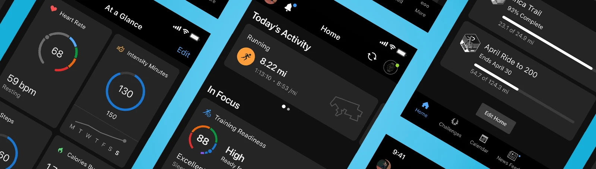
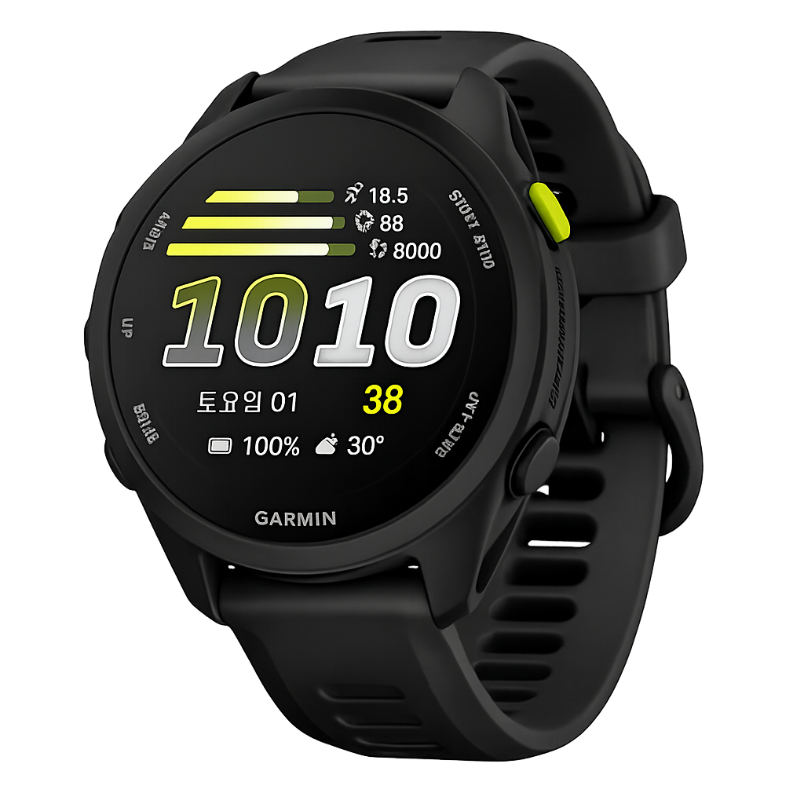
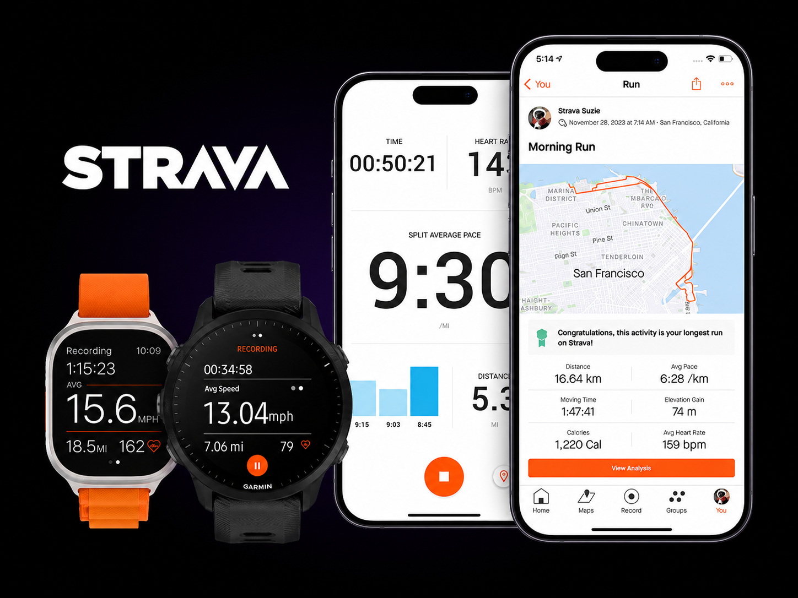
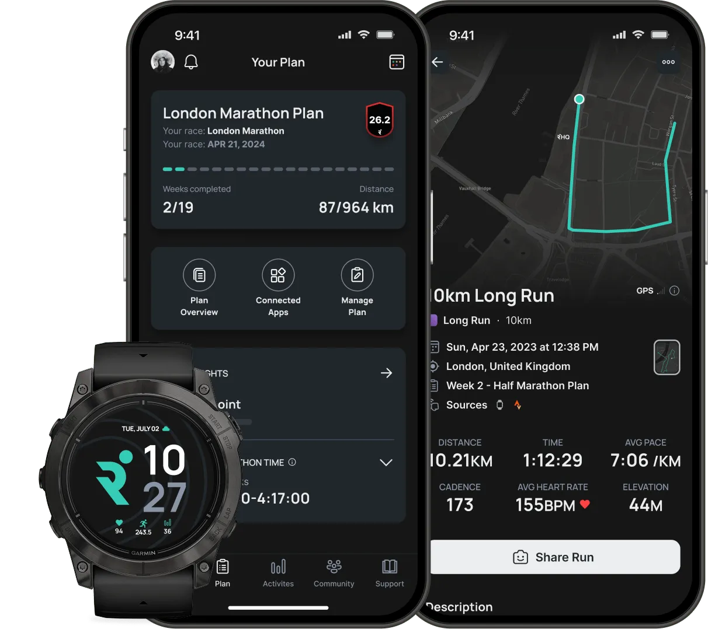
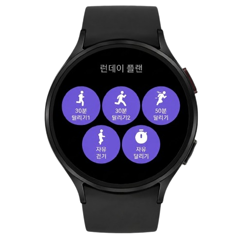
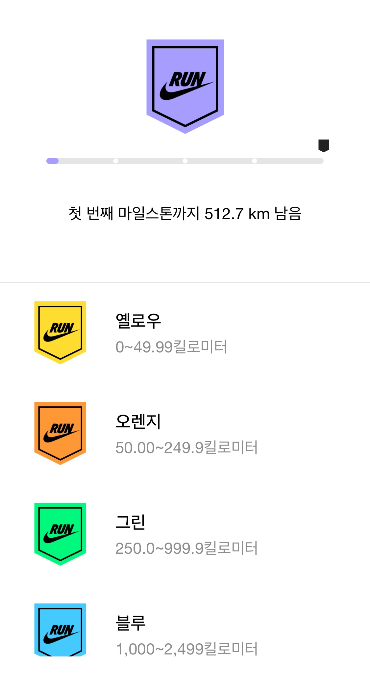
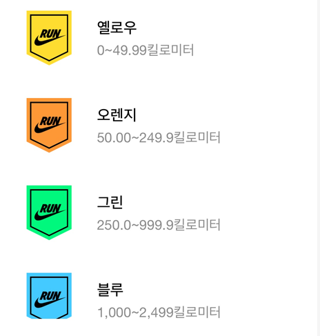
COMPETITIVE POSITION
왜 Runner's High여야 하는가?
Space: Strava / Runna 보기Space: NRC / RunDay 보기Space: 다음 슬라이드
서비스초보 접근성개인 맞춤 훈련Wear 경험시장상 의미
Garmin중간강함호환 Garmin 워치 필요전문 러너 친화적이나 워치 구매와 기기 생태계 진입 장벽 존재
Strava / Runna낮음강함, 접근 제한한국어 코칭 한계기능은 탁월하지만 한국 제한 국가·한국어 코칭 부재로 신규 접근성이 낮음
NRC / RunDay강함제한적콘텐츠/오디오 중심시작은 쉽지만 생체 컨디션 기반 조절은 약함
Sources: Strava availability in certain countries, Strava + Runna subscription, Garmin Coach/Forerunner training plan docs, Nike Run Club, RunDay, Runner's High codebase.
PRODUCT DIRECTION
왜 Runner's High인가?
입문자가 러닝을 시작하고, 몸 상태에 맞게 조절하고, 흥미를 잃지 않도록 만드는 Wear 기반 초개인화 러닝 서비스입니다.
01
목표 기반 러닝 플랜
사용자의 목표 거리와 현재 수행 능력에 맞춰 오늘의 러닝을 작게 제안합니다.
02
헬스케어 데이터 해석
수면, 심박, HRV, 러닝 기록을 컨디션 레벨로 바꿔 훈련 강도를 조절합니다.
03
초개인화 지속 경험
부상 기록과 피드백까지 반영해 입문자가 오래 달릴 수 있는 루틴을 만듭니다.
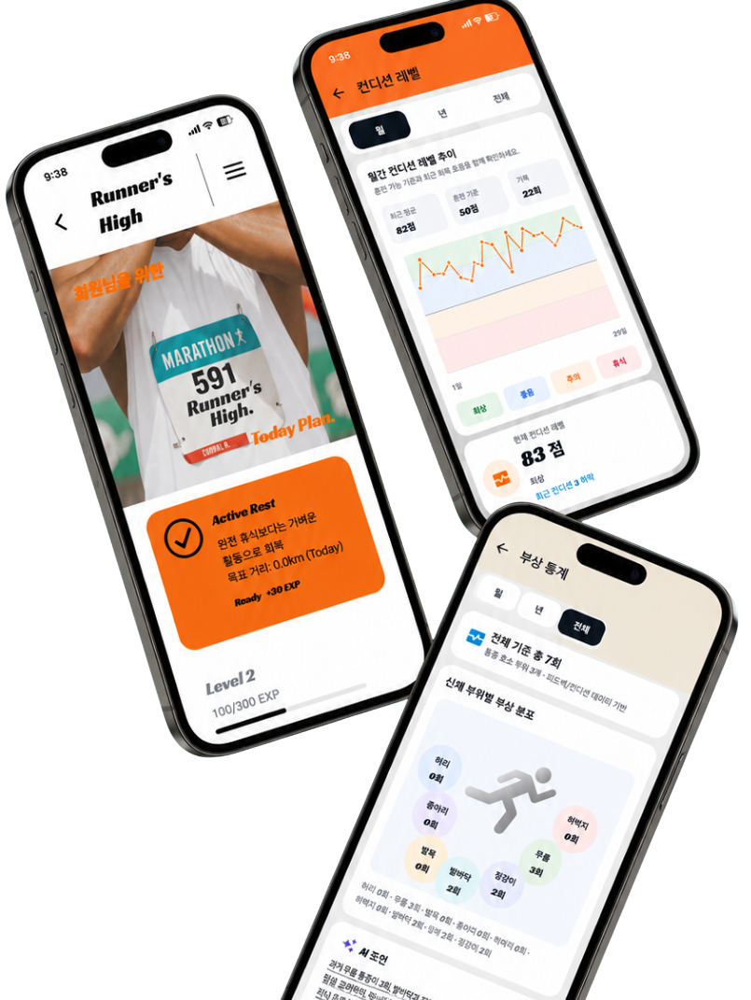
Condition Level + AI Plan
FEATURE CATALOG
Runner's High 기능 한눈에 보기
기본 기록 앱이 아니라, 건강 데이터와 커뮤니티 경험을 하나의 러닝 루틴으로 묶는 서비스입니다.
기능기능 설명
인증/프로필로그인, 회원가입, 신체 정보, 러닝 목적, 경험 수준 등 사용자 기본 정보를 관리합니다.
러닝 기록러닝 시작부터 종료까지 거리, 시간, 페이스, GPS 경로, 심박 데이터를 기록하고 결과를 보여줍니다.
활동 분석월별/연간 러닝 통계, 최근 기록, 컨디션 변화, 부상 위험 등을 분석해 보여줍니다.
코스러닝 기록을 코스로 저장하고, 내 코스·주변 코스·인기 코스를 조회하거나 공유할 수 있습니다.
러닝메이트함께 달릴 사람을 모집하는 방을 만들고, 조건에 맞는 방을 검색하거나 참여할 수 있습니다.
레벨/배지러닝 기록에 따라 경험치, 레벨, 미션, 배지를 제공해 성취감과 지속 동기를 높입니다.
헬스데이터 연동Health Connect와 Wear OS를 통해 심박수, 걸음 수, 수면 등 건강 데이터를 연동합니다.
AI 코치사용자의 기록, 컨디션, 피드백을 바탕으로 맞춤형 러닝 조언과 오늘의 플랜을 제공합니다.
CORE ENGINE 01 · INJURY PREVENTION
부상 방지를 먼저 생각하는 AI 러닝 코치
러닝 부상은 단순히 많이 달려서가 아니라, 오늘의 회복 상태와 통증 이력을 무시한 채 갑자기 더 멀리 달릴 때 커집니다.
2025 BJSM5,205명
성인 러너 코호트
분석 세션588,071
Garmin 기반 러닝 세션
부상 보고35%
1,820명 러닝 관련 부상
거리 급증10%+
30일 최장거리 대비 초과 시 위험 증가
Space: Runner's High 케어 흐름 보기 · Sources: British Journal of Sports Medicine 2025, npj Digital Medicine 2026, PLOS ONE 2023.
WHY INJURY-BASED CARE
컨디션과 통증 이력을 읽고, 쉬어야 할 때 쉬게 합니다.
초보 러너가 무리한 거리 증가로 흥미를 잃지 않도록 오늘의 강도와 주의 부위를 먼저 안내합니다.
거리 급증 경고
통증 피드백 누적
쉬운 한국어 코칭
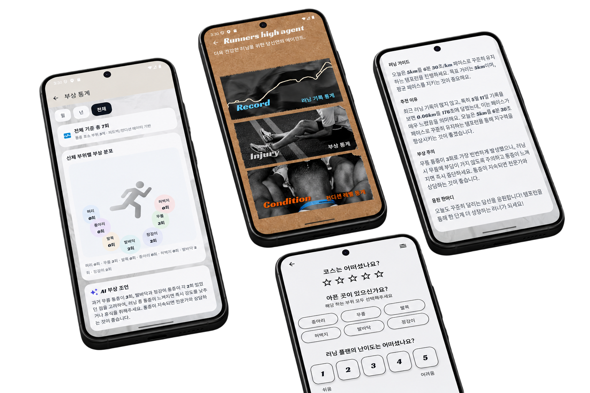
01러닝 전
컨디션 점수와 최근 기록으로 오늘의 거리·페이스를 조절합니다.
02러닝 중
GPS, 페이스, 심박 데이터를 수집해 다음 추천의 근거로 남깁니다.
03러닝 후
통증 부위와 난이도 피드백을 받아 부상 통계와 AI 조언으로 연결합니다.
CORE ENGINE 02 · CONDITION LEVEL
컨디션 점수는 감이 아니라, 회복 신호를 통합한 러닝 준비도입니다.
Runner's High는 수면 시간, 심박 변이도, 안정 시 심박수를 LLM 조언의 핵심 입력값으로 사용해 오늘의 거리와 강도를 보수적으로 조절합니다.
Sleep수면 시간
+
지구성 수행 저하 신호
HRV심박 변이도
+
자율신경계 회복 신호
RHR안정 시 심박수
=
피로·회복 필요 보조 신호
Condition컨디션 레벨
오늘의 러닝 강도 조절
HRV는 교감·부교감 신경 균형을 반영해 훈련 부하 설정과 부적응 추적에 활용될 수 있습니다.
Dong JG. doi: 10.3892/etm.2016.310431개 연구, 478명 메타분석에서 수면 박탈은 지구성 운동 수행에 중간 정도의 부정적 효과를 보였습니다.
Lopes et al. doi: 10.1080/17461391.2022.2155583단일 진단값이 아니라 훈련 부하와 함께 해석할 때 사전 피로와 회복 필요성을 조기에 파악하는 데 유용합니다.
Haddad et al. doi: 10.1016/j.physbeh.2013.06.016해석 범위: 의학적 진단이 아니라 개인 기준선과 최근 추세를 바탕으로 러닝 강도·휴식·회복 조언을 조정하는 맥락 지표입니다.
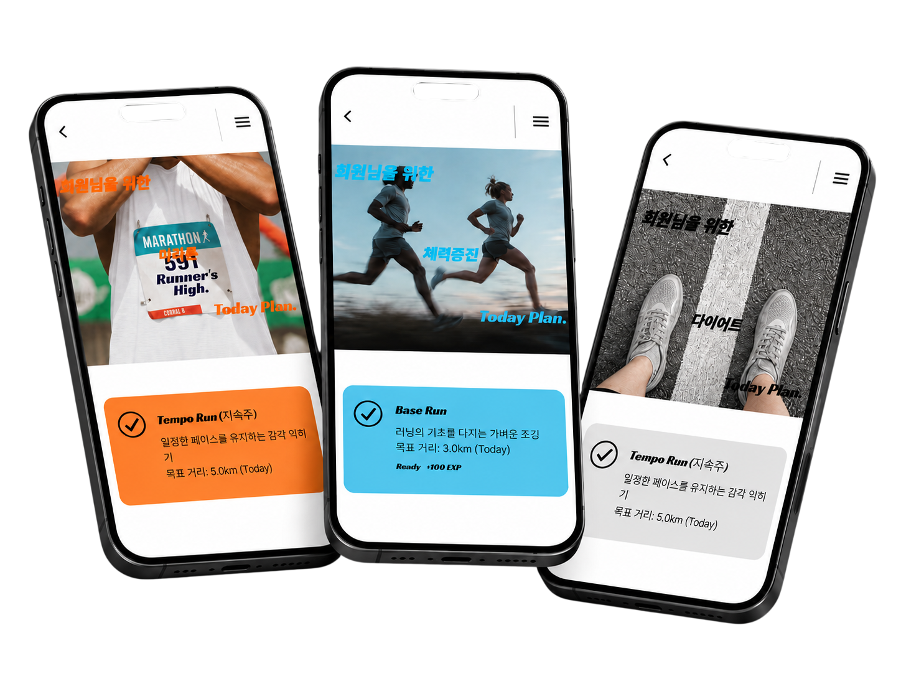
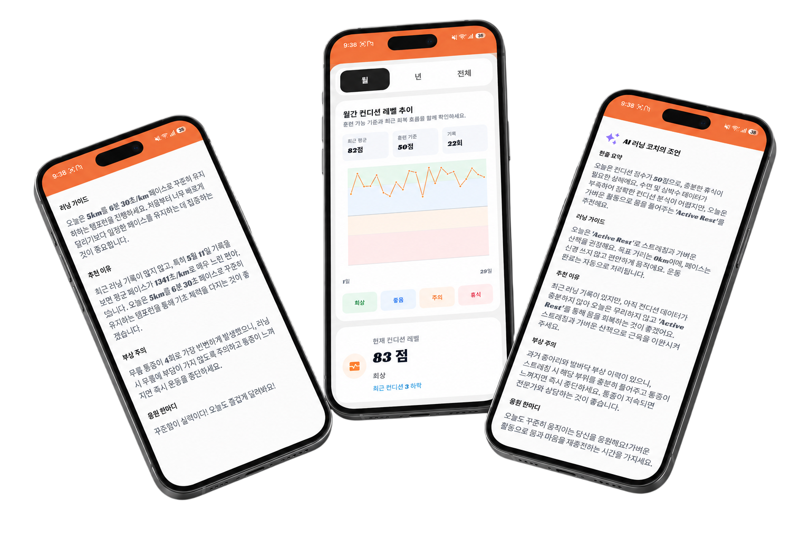
CORE ENGINE 03 · GEMINI AI COACH
목표는 다르게, 조언은 컨디션에 맞게 라벨링합니다.
사용자의 목표 플랜과 컨디션 레벨을 함께 입력해 Gemini가 오늘의 러닝을 실행 가능한 추천 라벨로 번역합니다.
마라톤 준비, 체력 증진, 다이어트처럼 목적에 따라 기본 거리·페이스·운동 종류를 다르게 시작합니다.
수면, HRV, 안정시 심박수 기반 점수로 오늘 강도를 유지할지 낮출지 판단합니다.
AI는 플랜을 새로 지어내기보다 서버가 계산한 범위 안에서 추천 라벨, 이유, 주의사항을 설명합니다.
VALIDATION
상용 플랫폼의 훈련 상태 가이드와 AI 코치의 의미 일치도를 검증합니다.
Garmin/WHOOP의 공개 가이드를 정답으로 단정하지 않고, 상용 플랫폼 기준과의 일치도 분석으로 표현합니다.
Accuracy87%강도 분류 일치
F1-score0.85Recovery/maintain/load class
BERT Similarity0.91문장 의미 유사도
AI 코치 추천은 상용 웨어러블 플랫폼의 운동 가이드와 평균 91% 수준의 의미적 일치도를 보였고, 훈련 강도 분류 기준 F1-score는 0.85를 기록했습니다.
Reference frame: Garmin Training Status public guide, WHOOP-style recovery/readiness guidance. Use as commercial-platform alignment, not ground truth.
COMMUNITY / COURSE CREATOR
초개인화를 넘어서 모두 함께
Runner's High가 코스크리에이터를 넣은 이유는 단순한 지도 기능이 아니라, 초보 러너가 검증된 코스를 따라 뛰고 다시 사람과 연결되는 지역 기반 성장 루프를 만들기 위해서입니다.
2025년 서울 러너스 페스티벌은 약 5,000명이 참가했고, 10K 오픈런과 크루 랭킹전에 약 3,000명이 참여했다는 보도가 있었습니다.
Strava, Garmin, komoot가 기록과 디바이스 경험에 강하다면, Runner's High는 초보 러너가 바로 따라 뛸 수 있는 검증 코스 경험에 집중합니다.
내가 실제로 달린 코스를 저장하고, 주변 러너가 따라 뛰며, 이후 매칭 방으로 이어지는 흐름이 다음 러닝을 자연스럽게 만듭니다.
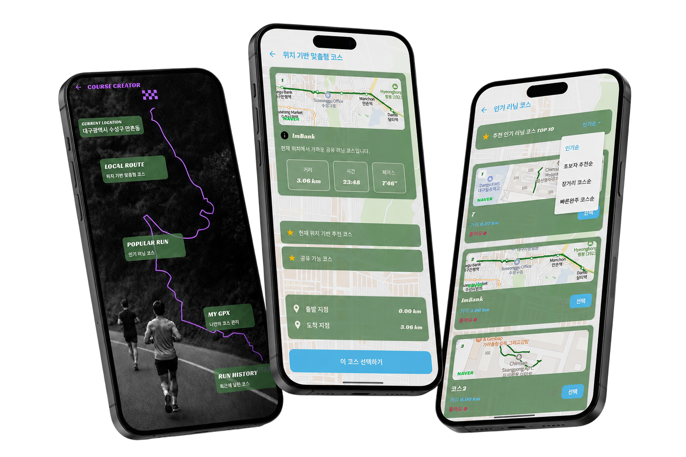
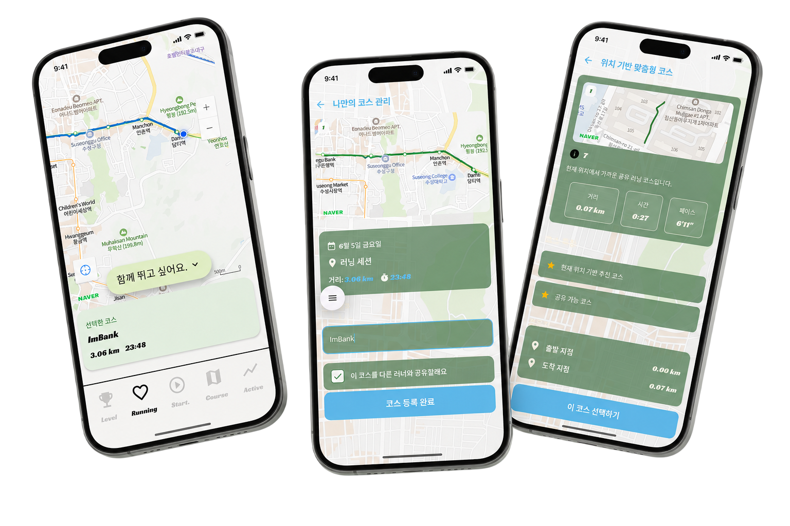
COURSE CREATOR UI
위치 기반 추천, 인기 코스, 나만의 코스 추가를 한 흐름으로 제공합니다.
기능 설명
위치를 기반해서 추천해주는 코스, 인기코스와 필터링, 나만의 코스 추가를 지원합니다.
- 러닝 기록을 코스로 저장하고 코스명, 거리, 총 시간, 경로 포인트를 관리합니다.
- 대용량 GPX 로그는 Cloud Storage에 분리 저장하고, Firestore에는 코스 메타데이터와 경로 포인트만 두어 운영 비용과 클라이언트 배터리 소모를 줄입니다.
- 내 코스, 공유 코스, 인기 코스, 주변 코스를 조회할 수 있습니다.
- 좋아요 수, 초보 추천, 장거리, 빠른 완주 기준 정렬과 수정, 공유, 삭제를 지원합니다.
RUNNING MATE
비슷한 조건의 러너를 찾으면, 소셜은 실행 가능성을 높이는 도구가 됩니다.
왜 러닝메이트인가
오늘 나와 비슷한 거리, 비슷한 레벨, 같은 시간대의 사람
사용자가 이 조건의 러너를 찾을 수 있다면, 커뮤니티는 잡담 공간이 아니라 실제 러닝을 시작하게 만드는 장치가 됩니다.
방 생성형 구조
자동 매칭보다 신뢰와 통제감이 높습니다.
완전 자동 매칭은 편리하지만 낯선 사람과 운동하는 상황에서는 불안이 큽니다. 방 생성형 구조는 거리, 시간, 장소, 레벨 의도, 인원 수가 명확해 사용자가 조건을 보고 참여 여부를 결정할 수 있습니다.
RUNNING MATE
UI 소개
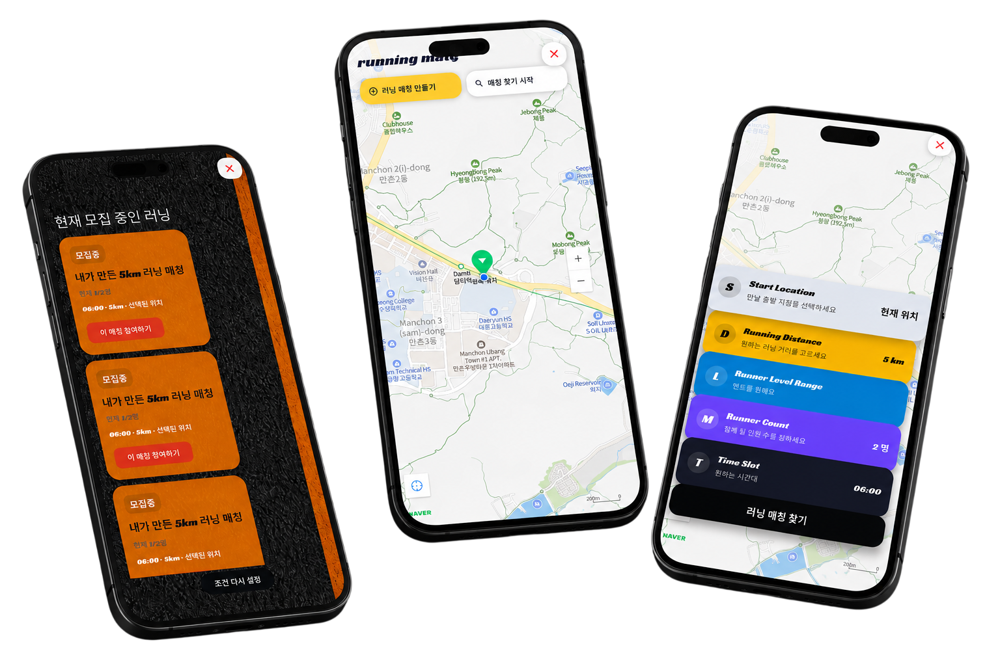
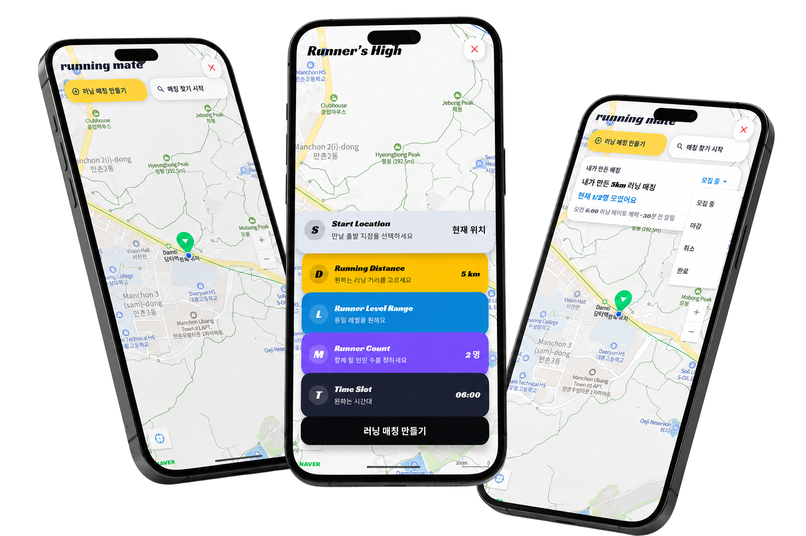
FUNCTION LOGIC
조건 기반 검색과 안전한 참여 상태 관리를 함께 처리합니다.
검색 시에는 위치 반경, 거리, 매칭 의도, 인원, 시간, 참여 가능 슬롯, 정렬 기준을 적용합니다. 위치 기반 필터링에는 Haversine 거리 계산이 사용됩니다.
참여, 퇴장, 상태 변경은 Firestore transaction으로 처리해 정원 초과와 상태 충돌을 줄입니다.
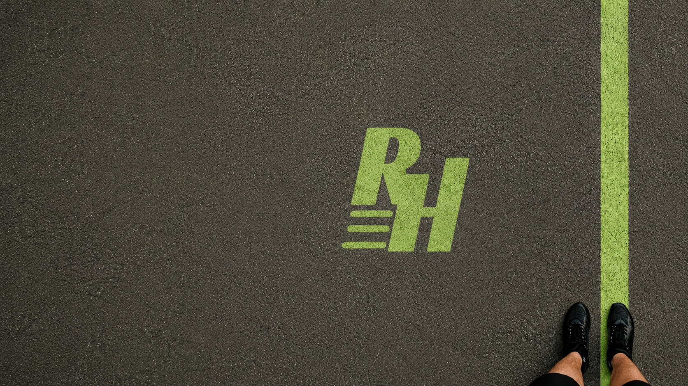
CORE FEATURES
리워드 & 러닝 세션 시스템
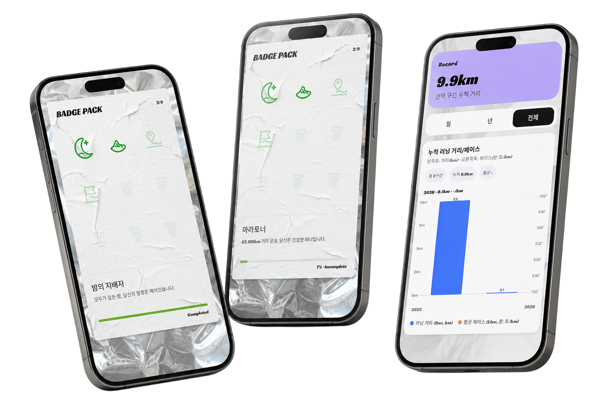
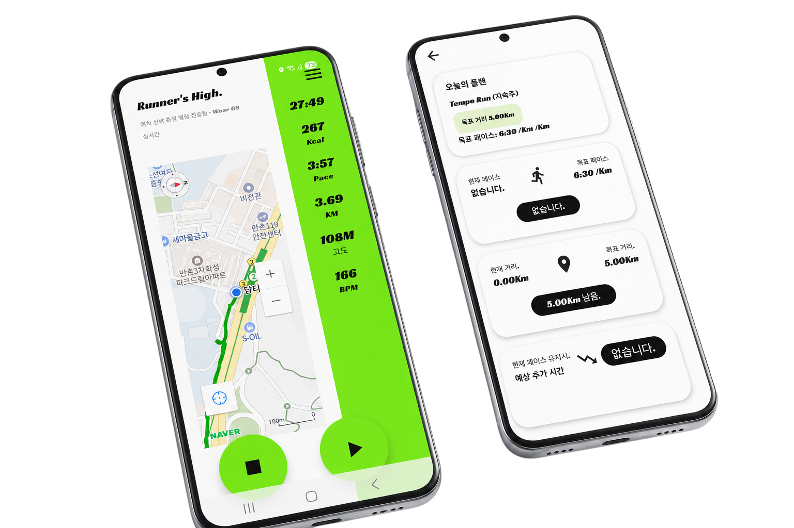
특정 조건을 달성했을 때 리워드 배지를 제공해 러닝 지속 동기를 만듭니다.
누적 거리와 페이스 변화를 시각화해 사용자가 자신의 성장을 확인할 수 있습니다.
GPS 정확도, 위치 점프, 속도, 시간 간격을 함께 검증하고 1초 단위 고정밀 위치 수집과 최소 이동거리 기준을 적용했습니다.
러닝 중 화면을 터치하면 현재 거리와 페이스를 오늘의 목표와 바로 비교할 수 있습니다.
IMPLEMENTATION STACK
실제 구현에 사용한 기술 스택
영역
실제 사용 기술
코드에서 맡은 역할
Android App
Android Studio, Kotlin, Jetpack Compose
모바일 화면, 러닝 세션, 코스, 러닝메이트, 리워드와 통계 UI를 구성했습니다.
Wear OS
Kotlin, Compose for Wear OS, Wearable Data Layer
워치 심박 측정과 휴대폰 앱 연동을 통해 실시간 러닝 데이터를 보강했습니다.
Backend
Firebase Functions, Python, Firestore, Cloud Storage
회원, 러닝 기록, 코스, 매칭 방, 배지, 통계 데이터를 관리하고 GPX 파일을 분리 저장합니다.
Map / Health / AI
Naver Map API, Health Connect SDK, Gemini AI API
지도 기반 코스·매칭 UI, 수면·HRV·심박 데이터, AI 러닝 코치 설명 생성을 담당합니다.
CONCLUSION
Runner's High는 AI 코칭 앱을 넘어, 지역 러닝 생태계를 만드는 플랫폼입니다.
핵심 가치는 초보 러너가 오늘 실제로 달리게 만드는 것이고, 핵심 기능은 그 가치를 실행 가능한 루프로 증명합니다.
무리하지 않고 지속할 수 있는 오늘의 러닝을 제안합니다.
카페, 관광지, 상권과 연결되는 러닝 코스 네트워크가 됩니다.
조건이 명확한 방 생성형 매칭으로 커뮤니티 참여를 낮은 불안으로 시작합니다.
수익 가능성
검증된 코스는 지역 상권, 관광 코스, 챌린지, 제휴 쿠폰과 연결될 수 있습니다.
확산 가능성
방 생성형 매칭은 러닝 취미를 혼자 하는 운동에서 지역 커뮤니티 활동으로 확장합니다.
시장 신호
2025 서울 러너스 페스티벌은 5,000여 명이 참가했고, 10K 오픈런·크루 랭킹전에는 3,000여 명이 몰렸습니다. 사전 신청자에게 브랜드 할인 쿠폰북이 제공된 점은 러닝 코스가 상권 제휴와 연결될 수 있음을 보여줍니다. 2026년 런트립 흐름까지 보면, 코스 크리에이터는 지역 관광 상품으로 확장 가능합니다.
Research frame: Seoul Runners Station / 2025 Seoul Runners Festival / Run-trip tourism trend.
결론
Runner's High는 개인화 AI를 출발점으로 삼지만, 최종적으로는 코스와 사람, 지역을 연결하는 러닝 생태계입니다.